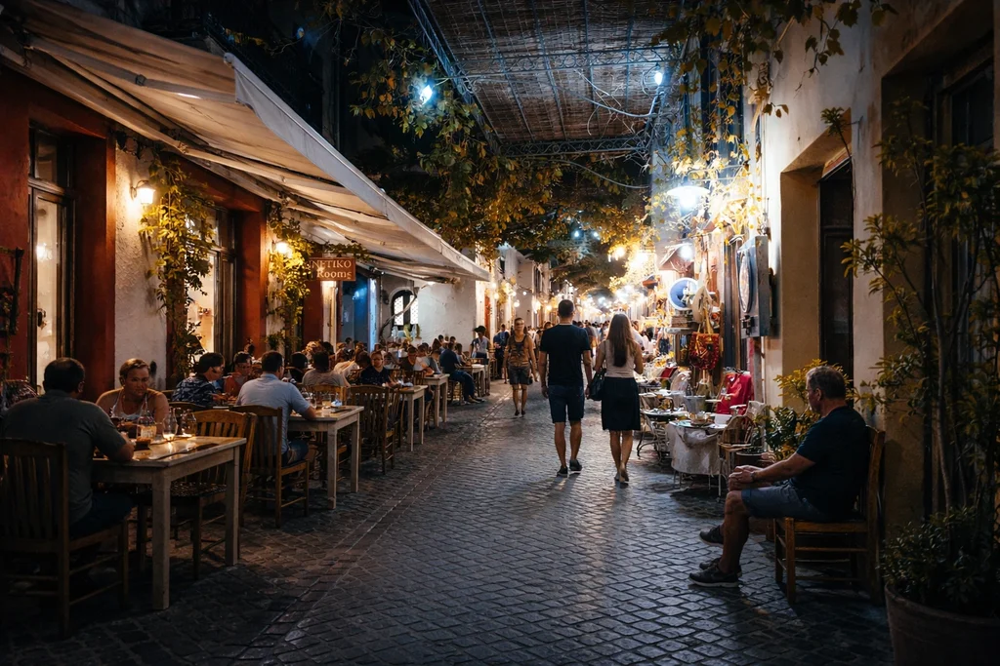

Premier Contact · Épreuve Psychologique
Port et Gare — Survivre aux faux guides
Votre premier contact avec Tanger sera crucial. Si vous arrivez par le ferry au port de Tanger Ville ou par le TGV Al Boraq à la gare de Tanger Ville, vous allez être immédiatement repéré comme un nouvel arrivant. C'est ici que se joue le premier filtre de sécurité psychologique.
Dès la sortie de la zone sous douane, plusieurs personnes s'approchent avec un grand sourire. Ils parlent un français parfait. Leurs techniques d'approche sont subtiles et rodées.
Les 3 phrases qui doivent vous alerter
- « Le centre-ville est fermé aujourd'hui à cause d'une fête, je vous montre le chemin. » — Faux, toujours.
- « Votre Riad a changé de propriétaire, laissez-moi appeler le gérant pour vous. » — Idem, c'est une invention.
- « Je ne veux pas d'argent, je veux juste pratiquer mon français. » — Ils voudront de l'argent.
Ces personnes — les « rabatteurs » — ne sont pas dangereuses physiquement. Leur objectif est de vous orienter vers une boutique de tapis, une herboristerie ou un restaurant où ils touchent une commission de 30 à 50 % sur vos achats.
La réaction efficace
Ne vous arrêtez pas de marcher. Regardez la personne dans les yeux, souriez et dites : « Non merci, je connais le chemin » ou « La, Shukran » avec la main sur le cœur. Si l'insistance devient pesante, dirigez-vous vers un policier en uniforme.
La Solution Radicale · Aucune Négociation
Welcome Pickups — Chauffeur Nominatif à l'Arrivée
Votre chauffeur vous attend avec une pancarte à votre nom derrière les douanes. Prix fixe confirmé à l'avance. Zéro contact avec les rabatteurs, zéro négociation, zéro stress après un long voyage.


Médina · Vigilance recommandée
Restez vigilant
Les 4 Pièges Classiques · Médina & Kasbah
Le Dictionnaire des Arnaques — Ne vous faites pas plumer
Arnaque 1 · Le « Cousin » et l'Atelier Artisanal
Un habitant sympathique vous aborde et engage la conversation sur le football ou votre ville. Après quelques minutes, il mentionne que son « cousin » tient un atelier coopératif juste derrière. Une fois à l'intérieur, on vous sert un excellent thé à la menthe pour vous détendre, puis la pression commerciale commence. Vous n'êtes pas en danger, mais il est psychologiquement difficile de sortir sans acheter un produit très surévalué.
Arnaque 2 · La Fausse Huile d'Argan
Dans les ruelles du Petit Socco, des marchands proposent des bouteilles d'huile d'argan à des prix défiant toute concurrence (20 à 30 MAD). Dans 95 % des cas, il s'agit d'huile de tournesol coupée avec un colorant et un parfum de synthèse. L'huile d'argan pure est un produit cher à produire. Rendez-vous exclusivement dans les pharmacies de la Ville Nouvelle ou auprès de coopératives certifiées par l'État.
Arnaque 3 · Les Billets Périmés
Le Maroc a modernisé sa monnaie. Certains commerçants peu scrupuleux tentent de refiler des coupures obsolètes lors du rendu de la monnaie. Prenez l'habitude de vérifier rapidement les billets qu'on vous rend. Les billets valides sont facilement reconnaissables à leur hologramme doré et à leurs couleurs vives.
Arnaque 4 · Le Menu Sans Prix
Dans certains restaurants informels autour du Grand Socco, on vous présente une carte sans tarif affiché. À l'addition, les prix s'alignent sur des standards parisiens. Exigez toujours une carte avec les prix en Dirhams (MAD) avant de commander.
Règle universelle
Ces arnaques fonctionnent grâce à la pression sociale et à la politesse des voyageurs. Vous n'êtes jamais en danger physique. Le mot magique est simplement : « Non merci » dit avec fermeté et sans s'arrêter de marcher.
Transport Urbain · Source de Friction Principale
Taxis à Tanger — Maîtriser les codes pour éviter le conflit
Les Petits Taxis (Voitures bleues à bande jaune)
Ils circulent exclusivement à l'intérieur du périmètre urbain de Tanger. Capacité maximale : 3 passagers. La loi impose d'enclencher le compteur dès la montée. Dans la pratique, dès qu'un chauffeur repère un accent étranger, le compteur reste souvent éteint.
La règle d'or : Si le chauffeur refuse d'allumer le compteur, fixez le prix avant de fermer la portière. Pour aller du port à la Médina : dites « 25 Dirhams, ça va ? ». S'il demande 100 MAD, descendez et prenez le suivant.
Port → Médina
20–30MAD (max 3€)
Trajet 5-10 min
Centre → Café Hafa
15–20MAD
Quartier Marshan
Grand Socco → Marina
15–25MAD
Vue sur le port
Tarif de nuit
+50% légal
Après 22h
inDrive — L'alternative moderne
Si vous voulez vous épargner l'usure mentale de la négociation, téléchargez l'application inDrive avant votre arrivée. Vous entrez votre destination, proposez un prix, et les chauffeurs acceptent ou font une contre-proposition. Le prix est bloqué sur l'application — zéro mauvaise surprise en fin de course.
Uber n'existe pas à Tanger
Uber n'opère pas au Maroc. Si quelqu'un vous propose de vous commander un « Uber » pour un prix forfaitaire, c'est un rabatteur. Utilisez inDrive directement depuis votre téléphone.
 Petits Taxis Bleus · Tanger
Petits Taxis Bleus · Tanger
Après le Coucher du Soleil · Cartographie Nocturne
Sécurité Nocturne — Où marcher, où s'abstenir
Tanger est une ville nocturne. En été ou durant le Ramadan, les rues ne s'animent réellement qu'après le coucher du soleil. Globalement, vous pouvez vous promener tard le soir sans crainte, à condition de choisir vos quartiers.
Zones totalement sûres 24h/24
- Boulevard Pasteur et Place de la Ville de France : Cœur de la ville moderne. Terrasses bondées jusqu'à minuit, familles, présence policière constante. Ambiance animée et sécurisée.
- La Marina et la Corniche : Entièrement rénovées, ultra-sécurisées. Service de sécurité privé en plus des patrouilles. Idéal pour une promenade nocturne.
- Quartier du Marshan : Zone résidentielle calme, verdoyante. Café Hafa, palais, villas coloniales. Paisible en fin de journée.
Zones de vigilance nocturne
- Intérieur de la Médina après 23h : Les ruelles se vident des commerçants dès 22h. Le risque d'agression reste faible, mais le vol à la tire augmente dans les ruelles sombres. Si votre Riad est profondément dans la Médina, demandez au gérant de venir vous chercher aux portes extérieures si vous rentrez tard.
- Bas de la Médina près du vieux port : Zone liée aux activités maritimes traditionnelles. Évitez les ruelles non commerçantes et non éclairées après minuit.
 Médina · Sécurité Nocturne
Nuit
Médina · Sécurité Nocturne
Nuit
Santé & Bien-être · Tanger
Ne buvez jamais l'eau du robinet
Mais ne vous privez pas pour autant de la street-food — il suffit de savoir où.
Santé · Eau · Pharmacies · Assurance
Santé à Tanger — Éviter la « turista »
La Gestion de l'Eau
L'eau du robinet à Tanger est techniquement traitée mais possède une forte teneur en chlore et des minéraux différents de ceux que vous consommez habituellement. Ne buvez jamais l'eau du robinet. Utilisez exclusivement de l'eau en bouteille capsulée pour boire et pour vous brosser les dents. Les marques les plus courantes : Sidi Ali, Ain Ifrane, Sidi Harazem. Une bouteille de 1,5 L coûte 5 à 8 MAD dans n'importe quelle épicerie de quartier.
Méfiez-vous des glaçons dans les petits jus de fruits sur les places publiques. Dans les grands cafés du Boulevard Pasteur ou de la Corniche, les glaçons sont généralement faits avec de l'eau purifiée.
Street-food : Plaisir ou danger ?
Ce serait un immense dommage de vous priver de la gastronomie de rue à Tanger. Pour tester les brochettes, les escargots en bouillon ou les sandwichs locaux sans finir cloué au lit, appliquez une règle universelle : observez la clientèle. Si un stand est pris d'assaut par des familles tangéroises et des travailleurs locaux, c'est le meilleur indicateur que le débit est massif, les produits frais et l'hygiène respectée.
Le Réseau Pharmaceutique
Si malgré tout la turista vous touche, pas de panique. Les pharmacies à Tanger sont d'excellent niveau. Les pharmaciens parlent couramment le français. Imodium, Smecta et Paracétamol sont disponibles sans ordonnance.
En cas d'urgence médicale sérieuse, évitez les hôpitaux publics. Dirigez-vous vers les cliniques privées : Clinique du Rif ou Clinique Assalam. Les soins y sont excellents mais onéreux.
Le chaînon manquant
C'est précisément pour ces coûts imprévus qu'une assurance voyage est indispensable au Maroc. Votre carte bancaire ne couvre probablement pas les hospitalisations au Maroc — vérifiez les clauses d'exclusion géographiques.
 Pharmacie · Centre-ville Tanger
Pharmacie · Centre-ville Tanger
Indispensable · Assurance Voyage Maroc
EKTA Insurance — Protection Médicale Complète
Pour environ 2 € par jour : frais médicaux jusqu'à 100 000 €, rapatriement d'urgence, assistance téléphonique francophone 24h/24. L'assurance de ne pas voir vos économies s'envoler à la Clinique du Rif.


Guide Spécifique · Voyageuses en Solo
Femmes Seules à Tanger — Ce qu'il faut vraiment savoir
Tanger est une ville cosmopolite, habituée depuis plus d'un siècle aux flux internationaux et aux femmes indépendantes. Des milliers de voyageuses en solo visitent la ville chaque année sans aucun incident. Cependant, le Maroc reste une société patriarcale traditionnelle où les codes sociaux diffèrent de l'Europe.
Le Regard et l'Attention Masculine
Une femme seule, en particulier dans les zones traditionnelles comme la Médina, fera l'objet de regards insistants et de commentaires réguliers. Ce n'est pas de l'agression physique, mais cela peut être fatigant.
La posture recommandée : l'indifférence absolue. Ne répondez pas, ne souriez pas par politesse, mettez vos lunettes de soleil et continuez votre chemin. Les hommes lâchent prise très rapidement dès qu'ils constatent l'absence totale de réaction.
La Question Vestimentaire
Aucune obligation légale. Sur la Corniche, vous verrez des jeunes Marocaines habillées à l'européenne côtoyer des femmes en djellaba. Dans la Médina, pour limiter l'attention non désirée :
- Couvrez les épaules et descendez sous les genoux dans les quartiers anciens.
- Évitez les décolletés plongeants ou shorts ultra-courts dans la Médina et la Kasbah.
- Gardez ces tenues pour les plages privées ou les boîtes de nuit de la Corniche.
- Un foulard léger (chèche) dans votre sac est toujours utile — bâtiment religieux, soleil ou vent du détroit.
Le bilan objectif
Des milliers de voyageuses françaises visitent Tanger chaque année sans incident grave. La clé réside dans l'adaptation culturelle et non dans la peur. La ville est sûre — il s'agit simplement d'appliquer des règles de respect local.
Législation · Ce que le Touriste Doit Savoir
Lois Locales — Ce qui peut vous attirer de sérieux ennuis
Certains comportements banals en Europe peuvent vous valoir de sérieuses complications judiciaires au Maroc. La législation y est stricte sur plusieurs aspects sociétaux. Ces informations ne sont pas données pour vous décourager, mais pour vous protéger.


DANGER ABSOLU · Stupéfiants
Le Nord du Maroc est une grande zone de production de cannabis. À Tanger, vous croiserez des revendeurs à la sauvette. Ne consommez pas et n'achetez pas de stupéfiants, quelle que soit la quantité. La législation marocaine est d'une sévérité extrême : détention préventive immédiate et lourdes peines de prison ferme. De plus, certains revendeurs travaillent avec des informateurs de police.
Respect des Institutions
- Le Roi et la Monarchie : Le respect de la figure royale est inscrit dans la Constitution. Ne critiquez jamais le Roi ni la politique territoriale du pays dans l'espace public ou sur vos réseaux sociaux pendant votre séjour.
- L'Islam : L'accès aux mosquées actives est interdit aux non-musulmans à Tanger. Ne prenez pas de photos de personnes en train de prier sans accord explicite.
- L'alcool en public : Tolérance zéro pour la consommation d'alcool dans la rue ou en état visible d'ivresse dans la Médina.
- Relations non maritales : Théoriquement illégales au Maroc. En pratique, les hôtels et riads accueillent sans problème les couples non mariés dans les établissements fréquentés par les touristes.
Numéros d'Urgence · Adresses Utiles
Numéros d'Urgence — Enregistrez avant de débarquer
En cas de problème grave (perte de passeport, vol, accident), vous devez réagir vite. Enregistrez ces numéros dans votre téléphone avant de débarquer du ferry ou de l'avion.
539 339 600
Police Touristique · Assistance aux voyageurs
Le Consulat Général de France à Tanger
Situé sur la Place de France, en plein centre-ville. Contactez-le uniquement en cas de perte de vos papiers d'identité pour obtenir un laissez-passer d'urgence afin de rentrer en France. Pour tout autre problème (vol, arnaque, litige), c'est la police (19) qui intervient.
Rituel Quotidien · Avant Chaque Sortie
Check-list Sécurité — Passez-la en revue chaque matin
Avant de quitter votre chambre d'hôtel ou votre Riad pour explorer Tanger, passez en revue cette liste mentale. Elle vous évitera 90 % des galères potentielles.
Monnaie Liquide
Retirez des Dirhams dans les distributeurs officiels des grandes banques (Attijariwafa, BMCE, Banque Populaire). Évitez les grosses coupures — billets de 20, 50 et 100 MAD sont vos meilleurs alliés.
Navigation Hors-ligne
Téléchargez la carte de Tanger sur Google Maps en mode hors-connexion. Le GPS fonctionne parfaitement dans les ruelles étroites de la Kasbah. Vous éviterez de demander votre chemin à un faux guide.
Copie des Papiers
Laissez votre passeport original dans le coffre-fort du Riad. Promenez-vous avec une photo de votre page d'identité sur votre téléphone. Amplement suffisant pour les contrôles de routine.
Carte du Riad
Prenez toujours la carte de visite de votre hébergement avec l'adresse en arabe et en français. Si vous êtes perdu la nuit dans la Médina, montrez-la à un chauffeur officiel.
inDrive Installé
Avoir inDrive sur son téléphone avant d'arriver vous évite toutes les négociations de taxi. Proposez votre prix, le chauffeur accepte — fin de la discussion.
Assurance Voyage Active
Vérifiez que votre assurance voyage est valide et couvre le Maroc. En cas de doute, EKTA Insurance se souscrit depuis votre téléphone en 2 minutes.
Questions Fréquentes
FAQ — Sécurité à Tanger
Non. Tanger est comparable à Barcelone, Marseille ou Naples. Les agressions violentes visant les touristes y sont extrêmement rares. En revanche, les arnaques et le démarchage font partie du paysage — apprenez les codes et vous serez parfaitement serein.
Ne vous arrêtez pas. Regardez-le dans les yeux, souriez et dites : « Non merci, je connais le chemin » ou en arabe « La, Shukran ». S'il insiste, dirigez-vous vers un policier visible — les rabatteurs disparaissent en quelques secondes.
Exigez d'abord que le chauffeur enclenche le compteur. Sinon, fixez le prix avant de fermer la portière (25-30 MAD pour un trajet urbain classique). S'il demande trop, descendez. Pour zéro négociation : utilisez inDrive.
Oui. Des milliers de voyageuses en solo visitent Tanger sans incident. Attendez-vous à des regards et commentaires dans la Médina. Posture recommandée : indifférence absolue, lunettes de soleil, pas de réponse. Les hommes lâchent prise très rapidement.
Non. L'eau est traitée mais à forte teneur en chlore. Buvez exclusivement de l'eau en bouteille capsulée (Sidi Ali, Ain Ifrane, Sidi Harazem). Prix : 5 à 8 MAD la bouteille de 1,5 L.
Police Secours (ville) : 19 · Gendarmerie Royale (routes) : 177 · SAMU / Pompiers : 15 · Consulat Général de France à Tanger : +212 539 339 600 (Place de France).
Absolument pas. La législation marocaine est d'une sévérité extrême. Même pour une consommation personnelle minime : détention préventive et lourdes peines de prison ferme. Certains revendeurs travaillent directement avec des informateurs de police.
Continuez à Préparer votre Voyage
Plus de guides pour un séjour réussi à Tanger
Culture
Culture et Vie à Tanger
Langues, code vestimentaire, gastronomie et religion.
Lire →Transport
Se Déplacer à Tanger
Taxis, inDrive, TGV Al Boraq et aéroport.
Lire →Location
Louer une Voiture
DiscoverCars, assurance, code de la route marocain.
Lire →Itinéraire
Que voir à Tanger en 48h
Kasbah, Café Hafa, Cap Spartel et Grottes d'Hercule.
Voir →Pratique
Internet et Argent
Distributeurs, change et SIM locale.
Lire →Formalités
Documents pour le Maroc
Passeport, visa et formalités pour les Français.
Lire →